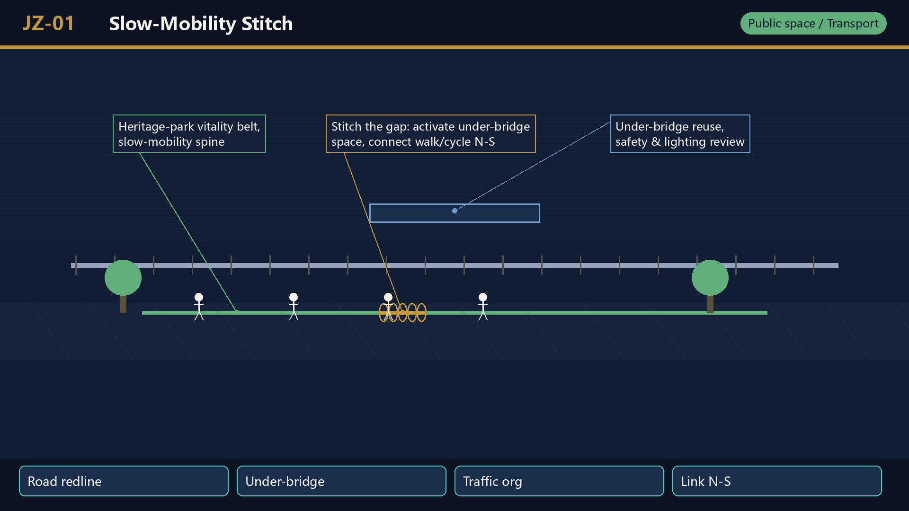
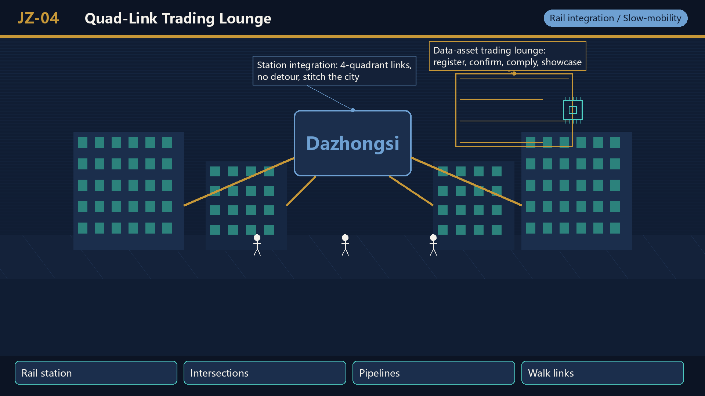
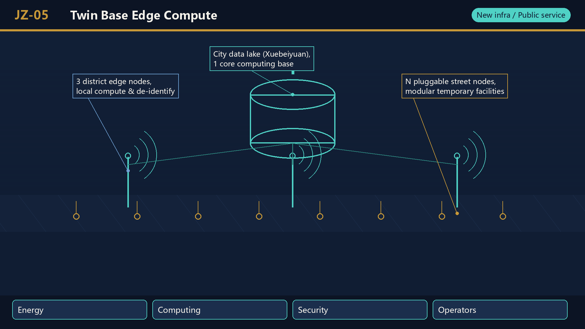
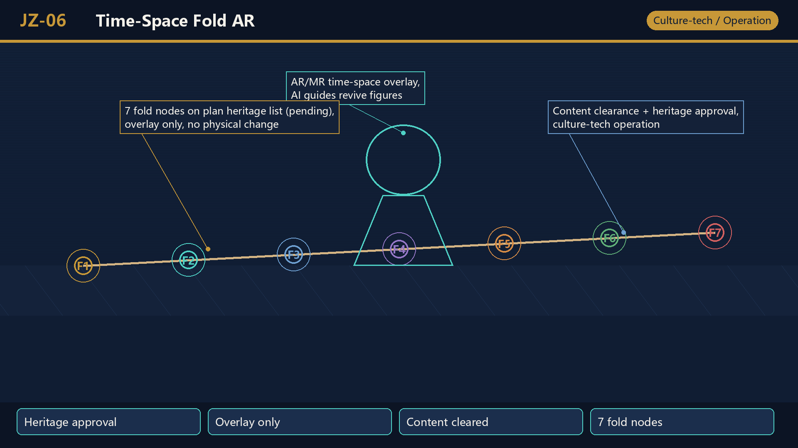
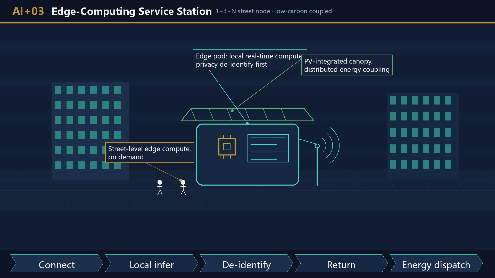
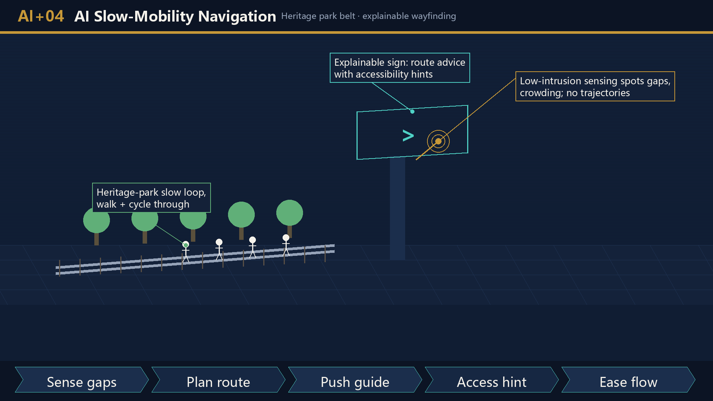
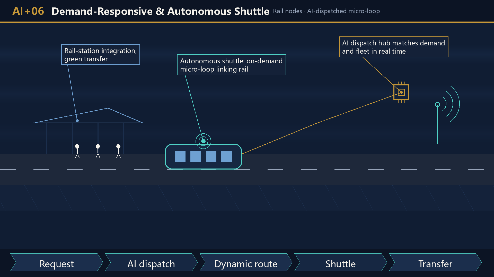
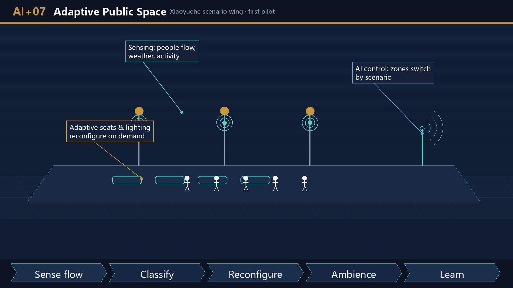
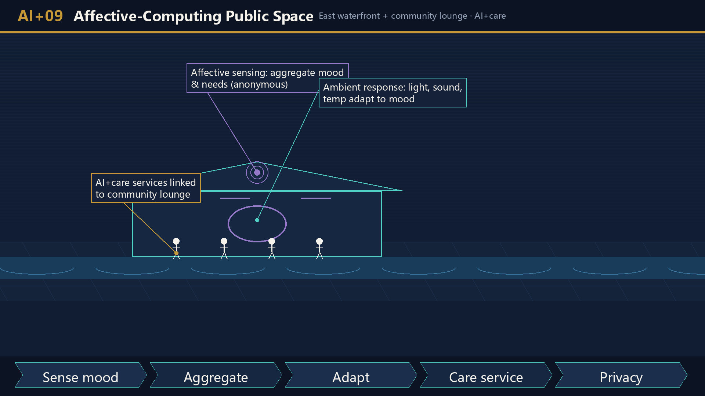
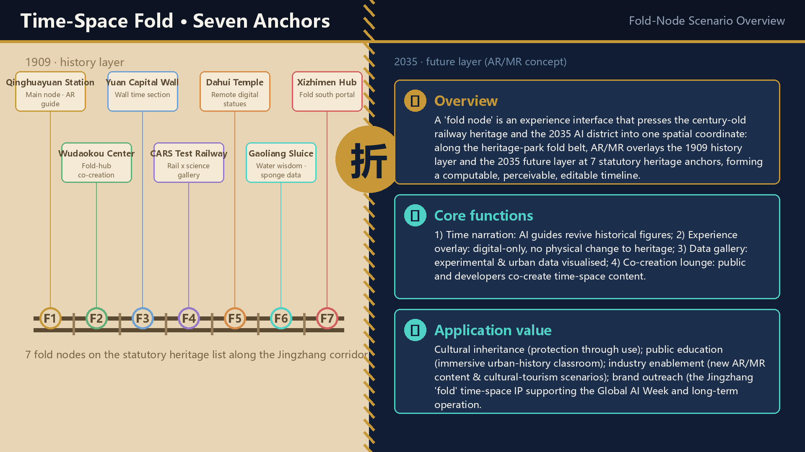

JZ-01 · Slow-Mobility Stitch
Heritage-park gap link: road redlines, under-bridge space, traffic review.
Jingzhang Digital-Intelligent Folding Belt: an AI urban design proposal benchmarked against the statutory regulatory plan, with data-element folding as its core mechanism. This page is generated from the submitted GeoJSON, metrics.json, figures and compliance matrix; no remote resources are loaded.
Center-seam fold, two eras facing each other: the left half is a yellowed 1909 railway blueprint, the right half a deep-blue digital twin, with one rail crossing the seam to complete the time travel.

Cover: Fold Jingzhang (English version)

Fig. 2: Overall structure "Belt · Axis · Two Centers · Nodes"
The overall design area (provisional) is ~11.4 km², fully covered by land-use, building, road, green, public-space layers and 7 fold nodes / 12 data nodes.

Fig. 1: Overall scope & evidence chain

Fig. 4: Mobility, blue-green & public-space composite system
Xuebeiyuan AI Acceleration Zone (Data Origin), Beijing AI Origin Community (Fold Hub), and Dazhongsi AI Industry Cluster (Exchange Port); eight urban-renewal projects (JZ-01~JZ-08) span public space, new infrastructure, industry services, rail integration, culture-tech and data governance.

Fig. 3: Detailed-design index of three key areas (announced ~192.1 / 104.3 / 72.0 ha, total 368.4 ha, provisional)
Heritage-park gap link: road redlines, under-bridge space, traffic review.
Xuebeiyuan data front: computing base carrier, river blueline, ecology & flood.
Origin-community conversion: campus boundary, tenure, ground-floor uses.
Dazhongsi trading lounge: rail station, intersections, municipal pipelines.
1+3+N edge compute: energy, computing, security and operators.
7-fold-node AR narration: heritage approval (overlay only), content clearance.
Three-tier list operation: Art. 82 path, enterprise KYC & audit.
Global AI four seasons: space permits, event safety, rights cleared.

JZ-01 Heritage-Park Slow-Mobility Stitching

JZ-02 Xuebeiyuan Data Sandbox & Qinghe Innovation Front

JZ-03 Origin-Community Fold Hub & Campus Conversion Street

JZ-04 Dazhongsi Station Quadrants & Data-Asset Trading Lounge

JZ-05 1+3+N Digital-Twin Base & Edge-Computing Nodes

JZ-06 AR/MR Experience Works at 7 Fold Nodes

JZ-07 Jingzhang Data Covenant Operation Platform

JZ-08 Global AI Week Public Route
Design-recalculation metrics, statutory baselines and operational calibration metrics form a verifiable evidence chain, graded by three confidence tiers: statutory (high) → derived (medium) → schematic (low). Full recalculation notes live in metrics.json.

Fig. 5: Core metrics recalculation & confidence grading (statutory → derived → schematic)
Formal review unlocks only after all four checks pass; currently provisional intake.
Ten AI+ scenarios are anchored to concrete layers; the Jingzhang Data Covenant, Algorithm Contribution Index and time-space narrative co-creation form three sustainable operating mechanisms.
Vertical-model training and L3 data sandbox on the national computing base.
For universities, open-source communities and startups in the Origin Community.
1+3+N street-level node prototype integrated with public services and low-carbon energy.
Explainable wayfinding and low-intrusion sensing for breakpoints and accessibility.
Showcase and international exchange for agents, smart terminals and content firms.
AI-dispatched micro-circulation feeders aligned with the statutory characteristic-bus clause.
Plazas and streets auto-adjust lighting, seating and functions by footfall, weather and events.
LLM-revived historical figures such as Zhan Tianyou serve as AI guides.
Real-time crowd-emotion sensing linked to AI+ elderly care.
Field pilots along the Xiaoyue River waterfront.
One-to-one with the 10 operation mechanisms in the AI Scenarios section, drawn in the Fold Jingzhang visual system. Each card uses leader-line callouts to explain key spatial elements and AI functionality, with a bottom "sense–decide–act–feedback" operation-flow strip. These are concept illustrations, not site photographs; heritage sites receive experience-overlay only with no physical alteration. The scenario system has passed a consistency verification against the latest national digital city-renewal guideline (conclusions only, no financial data). Benchmarking: assets/media/comparative-analysis.md.

Fig. 6: AI+ Scenarios (AI+ 场景)

AI+01 Urban Data Sandbox · Xuebeiyuan

AI+02 Open-Source Release Hall · AI Origin Community

AI+03 Edge-Computing Station · corridor nodes

AI+04 AI Slow-Mobility · heritage park belt

AI+05 Dazhongsi Intl Roadshow Lounge

AI+06 Demand-Responsive & Autonomous Shuttle

AI+07 Adaptive Public Space · Xiaoyuehe wing

AI+08 AI Historical Narrative · 7 fold nodes

AI+09 Affective-Computing Public Space

AI+10 Embodied AI & AI-Medical Pilot
A fold node is an experience interface that presses the century-old railway heritage and the 2035 AI district into one spatial coordinate: along the heritage-park fold belt, AR/MR overlays the 1909 history layer and the 2035 future layer at 7 statutory heritage anchors, forming a computable, perceivable, editable time-space narrative belt.

Fold-node scenario overview: concept, core functions, application value
With the heritage park as the fold-belt body (physical layer), the 1+3+N digital-twin base as the editable city (digital layer), and 7 statutory heritage anchors as the experience interface (experience layer), the three-fold structure forms a time-space narrative belt.
Time narration (AI guides revive historical figures), experience overlay (digital-only, no physical change to heritage), data gallery (experimental & urban data visualised), co-creation lounge (developers and public co-create).
Cultural inheritance (protection through use), public education (immersive history classroom), industry enablement (AR/MR & cultural-tourism scenarios), brand outreach (the Jingzhang 'fold' time-space IP supporting the Global AI Week).
Drawn in the "center-seam fold, two eras facing each other" visual system: left half shows the 1909 history layer in silhouette, right half the 2035 AR/MR future layer. Renderings express design intent only — not site photographs, no physical alteration of heritage. Fold-node coordinates are calibrated to the actual heritage sites. The Jingzhang railway imagery running across the eras is enlarged to highlight the "physical track × digital fold" theme.

FOLD-01 Qinghuayuan Station · main fold node (municipal heritage)

FOLD-02 Gaoliang Sluice (national heritage)

FOLD-03 Yuan Capital Wall (national heritage)

FOLD-04 CARS test railway (unrated heritage)

FOLD-05 Dahui Temple (national heritage)

FOLD-06 Wudaokou center (statutory two-centers)

FOLD-07 Xizhimen hub (statutory tier-2 key area)
Organized into "Data-Flow Video" and "AI-Empowerment Video" categories. Master spec: MP4 (H.264) ≥1920×1080, ≥30fps, AAC 44.1kHz ≥128kbps, ≤200MB per file. VID-AI-01 is now embedded (00:10); the data-flow video is in production and will replace its placeholder and be registered in manifest.json once delivered. Standardized captions sit below the player.
compliance_matrix.json, standard_matrix.json, design_depth_matrix.json and sources.json jointly support responsiveness to announcement sections 1.3/1.4/1.5 and agent.1—agent.6; statutory clauses are mapped by the regplan.1/regplan.2 compliance modules.
Statutory regulatory plan, official "Three Zones, Two Wings" release, open-call announcement, agent taskbook, site-package and processed fact pack.
To-be-supplemented regulatory plan, road redlines, ownership, municipal, heritage and engineering conditions must be listed in assumptions.json and their design impact explained in the proposal. No scenario may break the 24.08M m² hard cap (A-FLOORAREA-001).